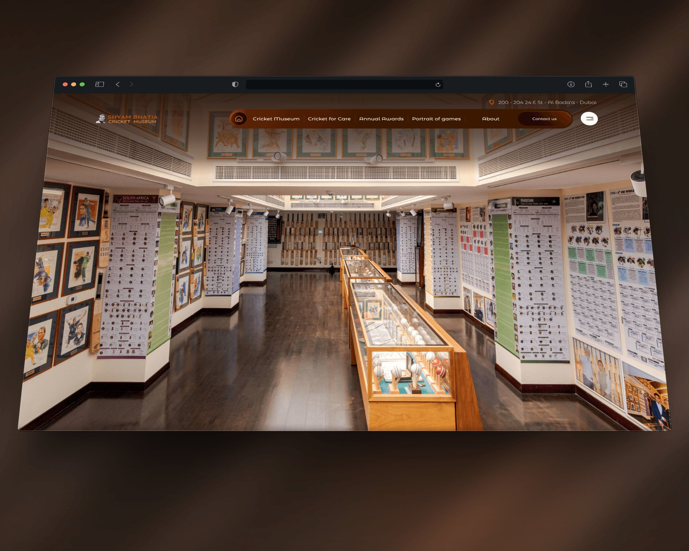
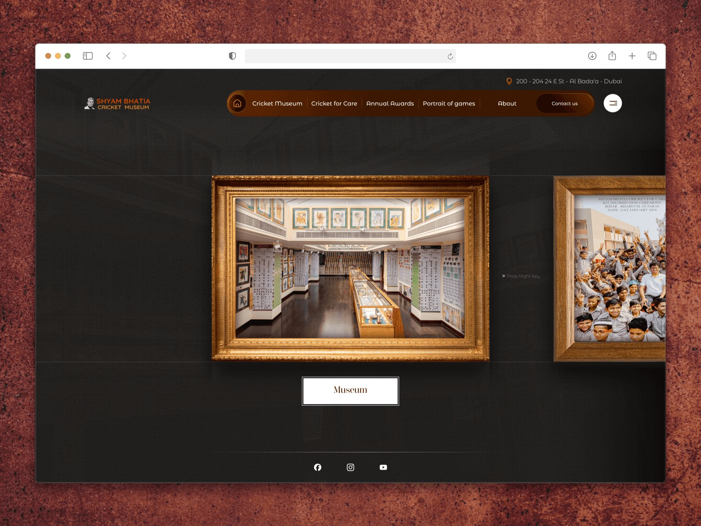
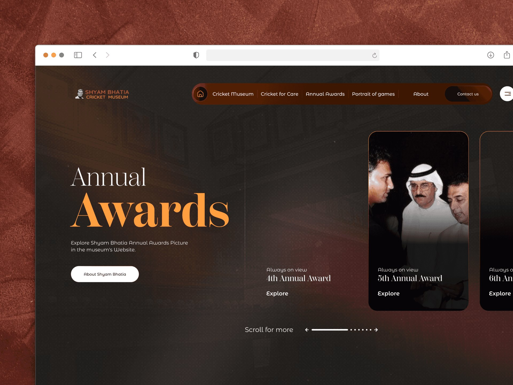
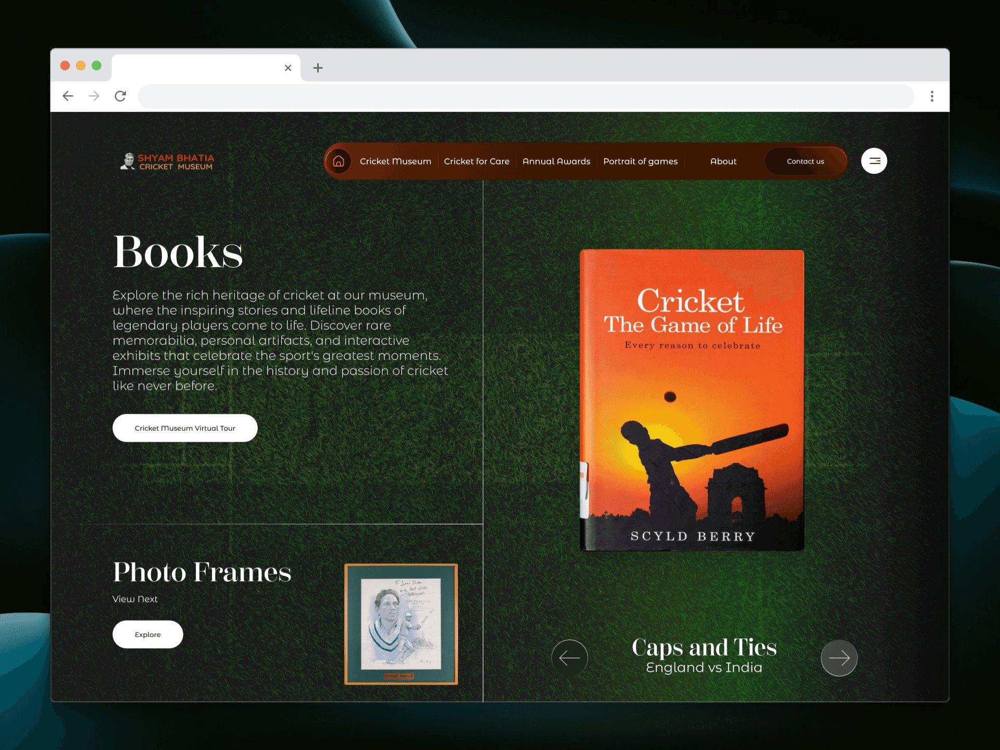
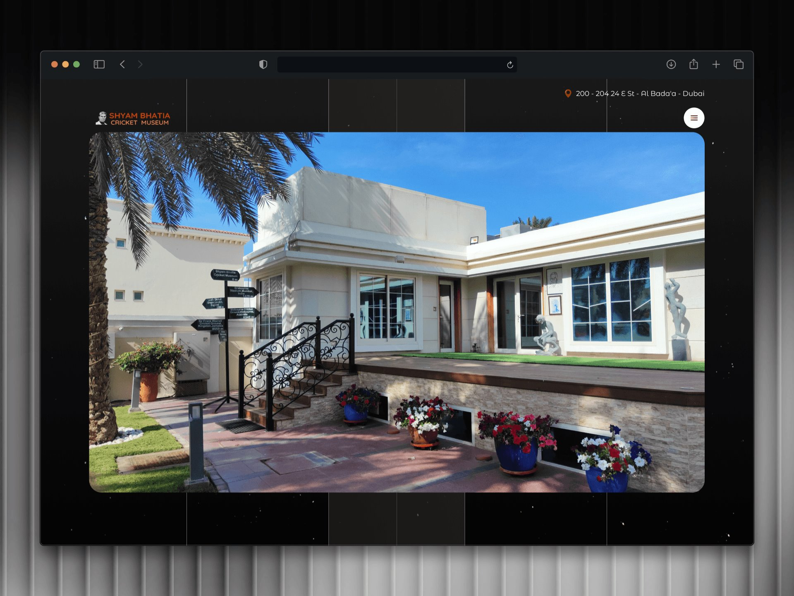
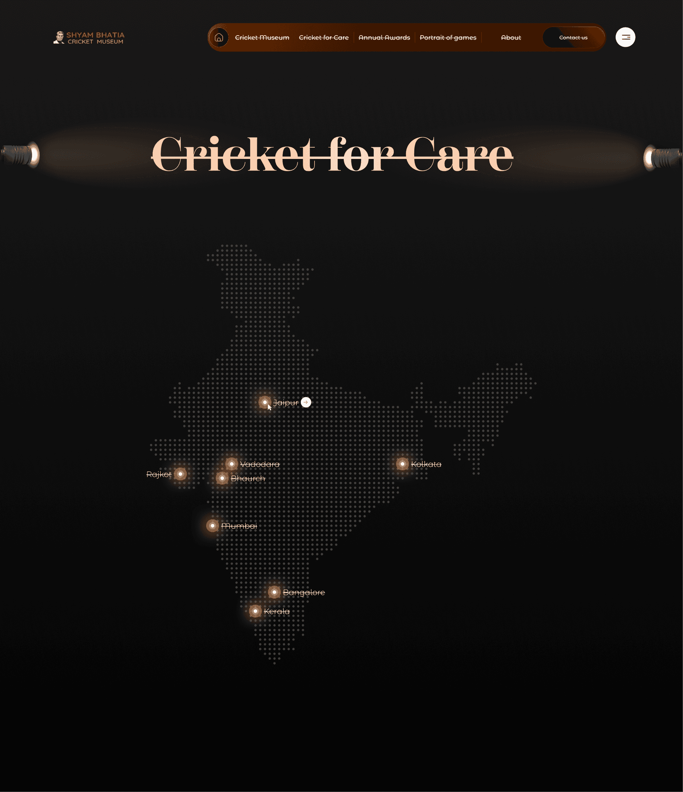
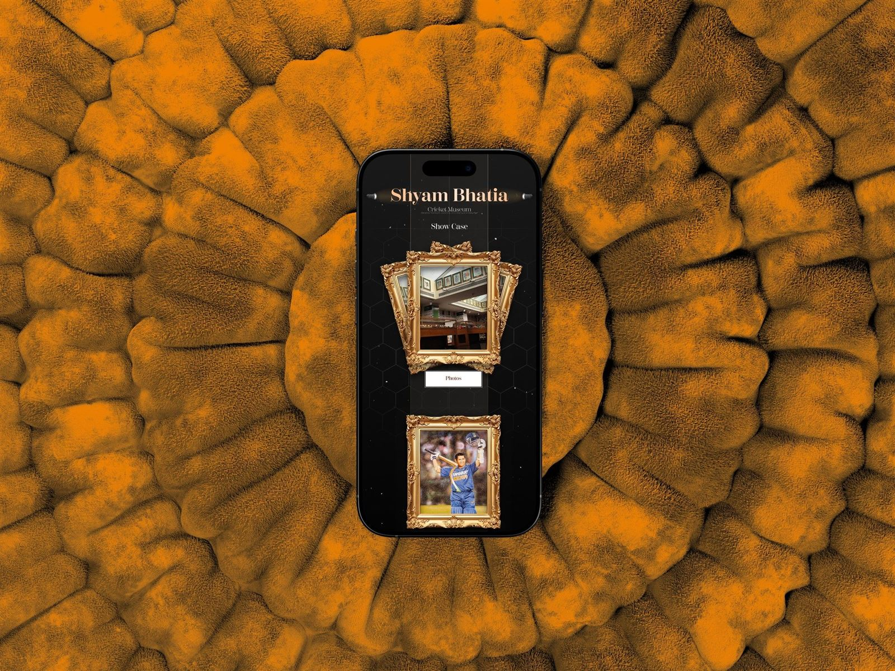

Preserve cricket’s legacy while making decades of history accessible, navigable, and engaging for a global audience.
The approach
Shape the experience around storytelling, guiding visitors through artifacts, timelines, and achievements with clarity.
The result
The final design was approved in the first review without revisions.
My role
UX/UI design for the museum’s website, designed in Figma and handed off to the developer through Dev Mode.
The central decision
Not a static archive, but a story. History unfolds naturally while the dignity and cultural value of the museum stay intact.
Project scope
A website that translates the essence of a physical museum into a meaningful digital experience.
The design
Key screens from the website. Select any image to enlarge it.

01Home. The museum itself leads, with a calm, pill-shaped navigation: Cricket Museum, Cricket for Care, Annual Awards, Portrait of games, About.

02Museum gallery. Photographs sit in gold frames in a sideways-scrolling gallery, with a Museum button below.

03Annual Awards. A large serif title, a short introduction, and portrait cards for each year’s award, with a clear Explore action.

04Books. A collection page with a featured book, a carousel (Caps and Ties, England vs India), and a pointer to the next collection, Photo Frames.
The story behind the design
Research, structure, and what changed
01 / Overview
From a physical museum to a digital experience.
The Shyam Bhatia Cricket Museum website was designed to translate the essence of a physical museum into a meaningful digital experience. The goal was to preserve cricket’s legacy while making decades of history accessible, navigable, and engaging for a global audience.
Rather than treating the website as a static archive, the experience was shaped around storytelling. Visitors are guided through artifacts, timelines, and achievements with clarity, allowing history to unfold naturally while maintaining the dignity and cultural value of the museum.
02 / Research & structure
Pacing the content before designing it.
The process began with understanding the museum’s vision, cultural importance, and the emotional value behind its collection. Studying the physical museum experience helped inform how content should be paced, grouped, and presented digitally.
Given the depth and variety of content, a strong information architecture was essential. Sections such as Museum, Awards, Outreach, Media, and About were clearly defined to reduce cognitive overload and help users explore freely without feeling lost.
Museum
Awards
Outreach
Media
About

A photograph of the museum building, set inside the page

Cricket for Care: a dotted map of India with a glowing marker for each city
03 / Visual design & experience
Letting artifacts and stories lead.
The visual direction was inspired by the atmosphere of a real museum.
Dark backgrounds, warm accent tones, and immersive imagery were used to draw attention to artifacts and stories rather than interface elements.
Layouts were intentionally minimal, with generous spacing and a calm rhythm. The interface stays subtle and consistent, allowing visuals and narratives to lead while ensuring usability across all sections.
Visual principles
Dark backgrounds and warm accent tones
Immersive imagery over interface chrome
Generous spacing and a calm rhythm

MobileThe same framed-gallery idea on a phone.
04 / Execution, collaboration & outcome
Designed in Figma. Approved in the first review.
The entire experience was designed in Figma using a component-driven system to ensure consistency and scalability across pages. Interactive prototypes were used to validate navigation and user flows before development began.
Collaboration with the developer was handled closely using Figma Dev Mode, enabling a smooth handoff and accurate implementation.
01Component-driven system
02Prototypes to validate flows
03Dev Mode handoff
Outcome
The final design was approved in the first review without revisions, confirming strong alignment between the museum’s vision and the delivered digital experience.
05 / What changed at a glance
Seamlessly explore decades of legacy.
Users can now seamlessly explore cricket history, discover rare artifacts, and navigate decades of legacy, all through a structured, intuitive digital museum experience.
1. Problem
The physical museum offered a deeply rich experience, but translating that depth online was challenging. Users struggled with navigating large volumes of historical content, understanding context behind artifacts, and finding specific sections without feeling overwhelmed.
2. Solution
The website was redesigned with a clear information hierarchy and storytelling-first layout. Content was organized into distinct sections such as Museum, Timeline, Awards, and Stories, supported by intuitive navigation, visual cues, and guided user flows to simplify exploration.
3. Impact
Visitors can now explore cricket history with clarity and confidence. The experience feels immersive yet effortless, encouraging longer engagement, easier discovery, and a stronger emotional connection with the museum’s legacy.
The result is a calm, immersive website that allows visitors to explore cricket history with clarity, confidence, and emotional connection, preserving the past while embracing a modern digital presence.